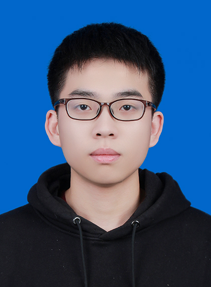

Ke Chen
Master's Student (Admitted in September 2024, Expected Graduation in June 2027)
Major: Electronic Information (Research: Quantum Computing – Quantum Error Correction)
School: School of Computer Science and Technology
University: University of Science and Technology of China
Email: kechen666@mail.ustc.edu.cn & ke_chen777@163.com
Address: University of Science and Technology of China, High-tech Campus

About Me
Hello! I am a master's student at the University of Science and Technology of China, and I received my bachelor's degree from the Artificial Intelligence Experimental Class at Nanchang University. I developed a strong interest in quantum computing during my studies and believe it holds immense potential. I hope to advance the field through in-depth research, contributing to the development of universal fault-tolerant quantum computers.
Previously, I studied the fundamentals of quantum computing, including algorithms, compilers, simulators, and topics related to noise and error correction. I am currently focusing on quantum error correction.
My undergraduate background in computer science has given me a solid foundation and rich experience with classical computing tools. Initially, I focused on applying classical computers to quantum computing problems. As my research deepened, I realized the critical importance of noise handling and therefore shifted my focus to quantum error correction, hoping to make progress in fault-tolerant quantum systems. My current research interests include:
- Optimization of Quantum Error-Correcting Codes, Decoders, and Encoders: Quantum error correction is still rapidly evolving, and even storing a single logical qubit faces significant technical challenges. Therefore, I closely follow the construction of new quantum error-correcting codes, and explore the efficient design and implementation of logical operations, fault-tolerant compilers, and decoders. My goal is to tailor these techniques to the characteristics of quantum hardware, providing a solid foundation for the reliable execution of quantum algorithms on real devices.
- Building Fault-Tolerant Quantum Computing Platforms and Exploring Fault-Tolerant Architectures: Classical computing architectures have evolved over a long history, but quantum computing is still in active debate over the choice of hardware materials and upper-level architectures. I hope to contribute to this exploration, and my current work focuses on building a complete fault-tolerant quantum software platform that turns theoretical understanding into runnable code and systems.
- Classical-Quantum Hybrid Computing: For the foreseeable future, classical computing cannot fully replace quantum computing. I am deeply interested in how to effectively combine classical and quantum computational resources to achieve a synergistic effect greater than the sum of its parts.
In terms of research tools, I have a solid understanding of greedy algorithms, heuristic methods, and artificial intelligence, as well as some experience with tensor networks. My background in programming and parallel computing also provides strong technical support for my quantum computing research.
Beyond academics, I am passionate about badminton. Although I have not participated in formal competitions, it helps me stay physically and mentally balanced during intensive research.
I sincerely hope to connect with outstanding researchers and like-minded peers, explore cutting-edge problems together, and share research ideas and experiences. I believe that through in-depth communication and collaboration, we can inspire each other and discover new research perspectives and approaches.
Publications
- Ke Chen, Mingzheng Zhu, Haishan Song, Wei Xie, and Xiang-Yang Li. ``Hypergraph-based approximate maximum likelihood decoding for quantum codes under circuit-level noise.'' Physical Review Research, 8(2):023191, May 2026.
Education
Undergraduate Education: 2020-2024, Artificial Intelligence Experimental Class, Ji Lian College & Information Engineering School, Nanchang University, Bachelor of Engineering.
Graduate Education:
- 2024-Present, University of Science and Technology of China, School of Computer Science, Currently part of the Linke Lab Quantum Group, working with Professor Xie Wei on quantum computing tools, focusing on quantum error correction.
Research, Competitions, Projects, and Skills
Through the following experiences, you can get a general understanding of the knowledge and abilities I have acquired since my university days.
Quantum Computing:
- (December 2023 - Present) Joined the Quantum Group at the School of Computer Science, University of Science and Technology of China, Linke Lab.
- (July 2023 - August 2023) Participated in the IBM Qiskit Global Summer School 2023, completed all labs, and earned Quantum Excellence Badges.
- (May 2023) Participated in the Origin Quantum Computing Competition, ranked in the top 10 in the preliminary round, and won second prize overall.
- (June 2022 - September 2023) Participated in the USTC Quantum Training Program, learned quantum computing-related knowledge, and shared study materials.
- (March 2022 - May 2022) Participated in the Huawei Hackathon Quantum Algorithm Competition, researched quantum machine learning.
- (January 2021 - May 2022) Studied and reproduced quantum qubit mapping-related papers, gaining initial insights into quantum compilation.
Computer Science:
- (February 2023 - November 2023) Served as the team leader of the Undergraduate Supercomputing Competition, successfully advanced to the IndySCC finals.
- (January 2022 - March 2022) Participated in the ASC Student Supercomputing Challenge, responsible for molecular dynamics simulation optimization, won second prize.
- (November 2021) Participated in the project of porting autonomous driving algorithms (e.g., YOLO) to deep learning chips (TPU).
- (December 2020 - September 2022) Participated in various mathematical modeling competitions, highest achievement: Meritorious Winner (F Prize) in the MCM.
Embedded Systems (Microcontrollers, FPGA, Drones):
- (November 2022 - December 2022) National FPGA Competition, responsible for porting RISC-V processors and embedded operating systems to new FPGA devices.
- (September 2021 - November 2021) "Smart Flying" Drone Competition, responsible for algorithm design and hardware adaptation.
- (April 2021 - June 2021) Developed a self-balancing bike using microcontrollers, responsible for software algorithm design.
Technical Stack:
- Quantum Computing: Quantum algorithms, quantum compilation, quantum simulators, quantum machine learning.
- Computer Science: Parallel computing, deep learning, performance optimization, mathematical modeling.
- Embedded Systems: Microcontrollers, FPGA, drone flight control, embedded operating systems.
Through these experiences, I have accumulated rich interdisciplinary knowledge and practical experience, especially in quantum computing and computer science.
Honors and Awards
Competition Awards:
- 2020 MathorCup University Mathematical Modeling Challenge - Big Data Competition, Third Prize
- 2021 11th MathorCup University Mathematical Modeling Challenge, Third Prize
- 2021 "Shenzhen Cup" Mathematical Modeling Challenge, Outstanding Paper Nomination
- "Smart Flying" 2021 8th Unmanned Aerial Vehicle Intelligent Perception Technology Competition, Ruins Scenario Online Simulation, Third Prize
- 2021 National Mathematical Modeling Competition, Provincial First Prize
- 2022 ASC Student Supercomputing Challenge, Second Prize
- 2022 12th MathorCup University Mathematical Modeling Challenge, Second Prize
- 2022 MCM Outstanding Paper Finalist (F Prize)
- 2022 National Mathematical Modeling Competition, Provincial Second Prize
- 2022 National College Student Embedded Chip and System Design Competition - FPGA Innovation Design Competition, Third Prize
- 2023 18th "Challenge Cup" Jiangxi Province College Student Extracurricular Academic Science and Technology Works Competition, Second Prize (Second Responsible Person)
- 2023 2nd CCF "Sinan Cup" Quantum Computing Programming Challenge, University Group, Second Prize
Undergraduate Innovation and Entrepreneurship Training Program:
- Completed the Provincial Undergraduate Innovation and Entrepreneurship Training Program at Nanchang University (Parallel Simulation Method for Gate-Level Circuit Expansion Based on Graph Theory).
Patents:
- A Method and System for Storage and Processing of Large-Scale Marine Data (Under Application). (Author)
- A quantum error correction decoding method and decoder based on hypergraph contraction.
Scholarships:
- (October 2021) Nanchang University Ji Lian College First Prize Scholarship
- (October 2022) Nanchang University Ji Lian College Second Prize Scholarship
Other Experiences
- Volunteer Service: Served as a volunteer for the 7th China International "Internet+" College Student Innovation and Entrepreneurship Competition, successfully completed the task of receiving judges.
- Club Activities: Together with Jiang Runmin and Gao Songyang, I co-founded the Open Source Makers Association (OSMA), aiming to truly help everyone come together and learn technical content.
Interests and Hobbies
- Sports: I enjoy running, which helps me decompress, as I can run without thinking about anything. I also enjoy playing badminton and table tennis, and I have also tried basketball and football.
- Movies: I prefer logical and realistic movies. I hope to learn about other people's stories through movies to inspire myself, such as "Forrest Gump."
- Reading: I currently have less time for reading, but I am very interested in books with profound insights. When I feel lost or bored, I read, such as "To Live," "Walden," and "How to Read a Book." I also hope to read "Das Kapital."
- Entertainment: I am also an avid gamer. I use games as a way to socialize and unwind, allowing me to relax physically and mentally when I'm tired. Of course, having in-depth conversations with others about research and dreams is also very appealing to me.